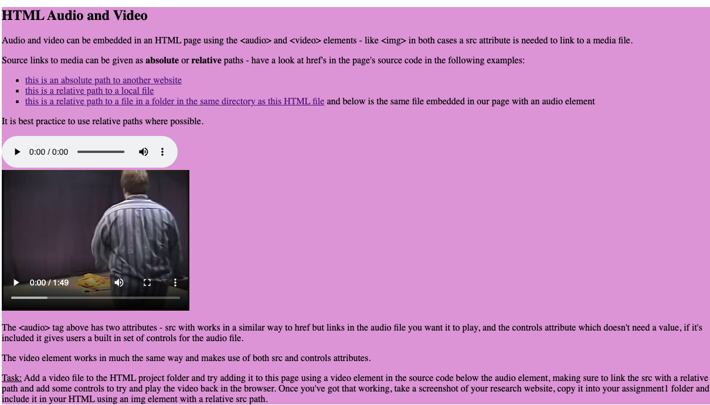

eamon
l i q u i d e n t r o p y
1) Spend two minutes with the experience and list all of your actions in granular detail.
I open the page and start hearing music.
Disorienting sound, not sure if its coming from the game at first.
I move my mouse around and see what the physics engine does.
Mouse blurs the page with a water like physics engine.
I wobble the mouse more to see how crazy it gets.
I see a list of effect parameters and move my mouse over.
Play with parameters, clicking randomly.
Adjust vibrato rate.
Adjust gleams.
Adjust entropy.
Audio is being effected by mouse movement and effects changes.
Start listening watch the noises and how that affects the experience or how the visual seem to be related to the audio.
Adjust worm parameter, observe effects.
2) What was the first thing you paid attention to when interacting with the experience?
The soundtrack of the work was slightly strange and unsettling, it caught me off guard and made me curious to explore the piece more.
The soundtrack reminds me of the Shepard tone, an audio illusion where a sequence of notes is played in ascending or descending order giving the impression that the sound is constantly rising or falling despite it staying at the same level.
I think this constant rising made interacting with the work feel as if you were playing with some strange otherworldly entity.
What did you spend the most time engaging with?
Most of my time was spent moving the mouse around the page and tweaking effect parameters to see how they effected how the interaction. At first was doing this in a rushed manner, my curiosity leading me to try and figure out exactly what everything did as quick as possible. Maybe this rushed feeling was partly due to the ascending ‘Shepard tone’ soundscape?
What was the most common action in your two minute interaction with the experience?
Moving the mouse in broad strokes across the page to see how the physics of the ripples on the page worked. I found this to be the most visually pleasing action.
What is your impression of the intended primary goal of the interactive experience?
I think the primary goal of the website was to absorb the user in the interactive experience. The ripples caused by moving the mouse across the page made the experience feel very tactile, like moving your own hand through a body of water and watching the ripples on the surface. This experience was added to by the sound effects that synced up with the movements on screen, further adding realism to the otherworldly visuals on screen.
Overall I found the experience to be quite meditative, it was easy to get lost in the motions on screen, exploring the possibilities that came with tweaking the effect parameters.
How does the experience communicate it's primary goal?
The website didn’t explicitly communicate any goal, and yet, I feel that this is exactly why it was so encapsulating. The vagueness of the experience encouraged me to explore the possibilities within the work without any preconceived notions of what should and shouldn’t be done.
By not giving the user a clear objective the experience allows them to interact with the piece autonomously.
What is your impression of the intended length of a single interaction and how often you are intended to interact with the experience?
2-5 minutes.
What metaphor or metaphors does the experience's mental model reference?
I feel that the fluid texture in the work is a metaphorical reference to water.
What does this reference suggest about how you should feel and/or act when engaging with it?
Water has been used in philosophy throughout history as an example of being adaptable and open to change. I feel that the metaphor of water encourages the user to approach the interaction in a playful manner, without any real expectations towards the experience.
What is the most frustrating element of the interaction and what makes it frustrating to you?
There wasn’t really anything that frustrated me about this interaction. I think this is due to the fact that there is no stated purpose or goal in the interaction, I was free to make what I wanted of the piece and any frustrations gained from the experience would probably have something to do with the user.
That being said, I can no longer hear the soundtrack I talked about in question 2. So it either doesn’t always play or I imagined it…kind of annoying.
What is the most satisfying element of the interaction and what makes it satisfying to you?
The movement on the surface of the image that was caused by moving my mouse. This was added to by the light refraction on the surface.

typeface